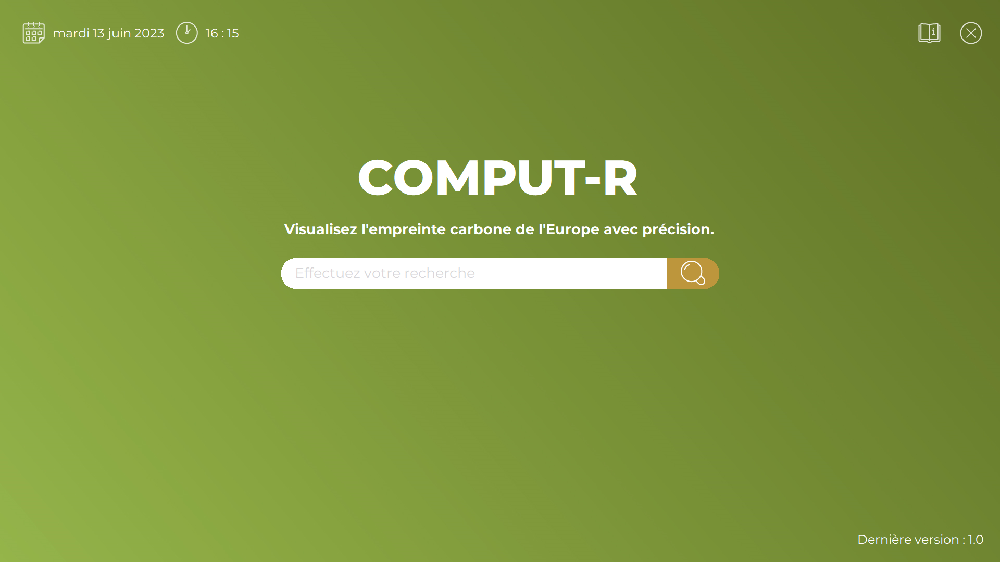
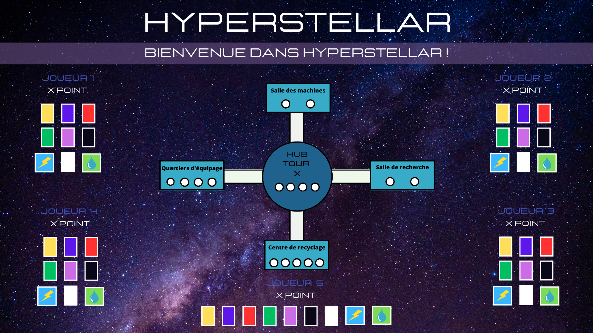
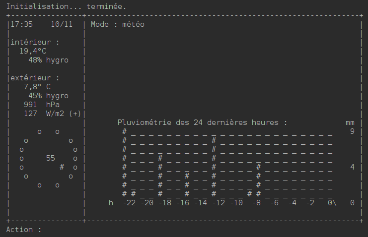
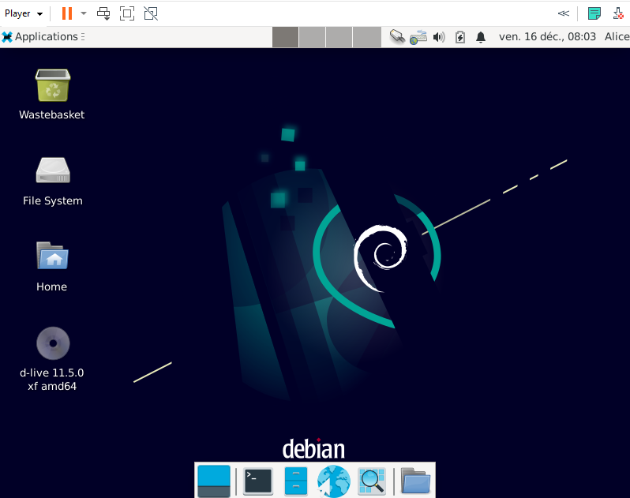
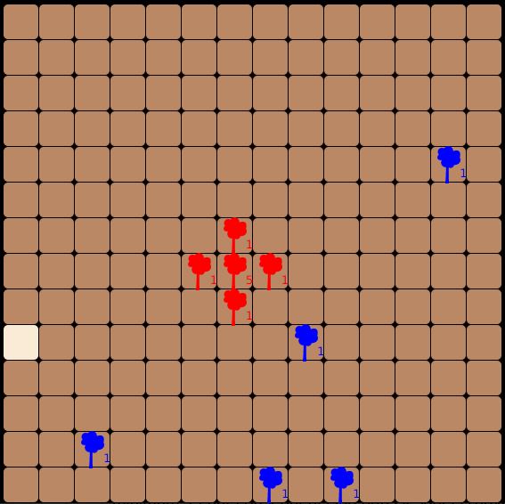
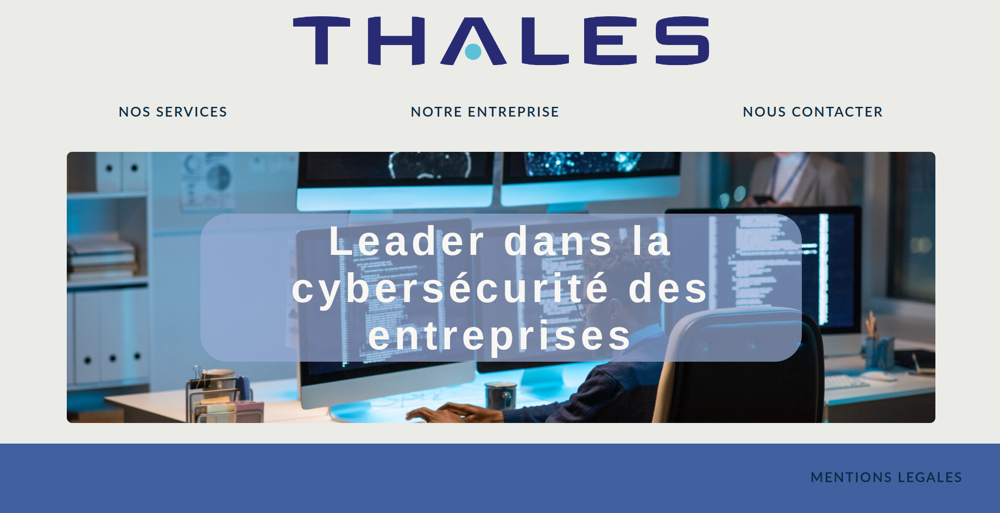

Le but de ce projet était de développer une web-app de gestion de séries selon les souhaits d'un client. Ce projet a
été réalisé en groupe en utilisant la méthodologie de gestion SCRUM.

Projet Comput-R
Le but de ce projet était de développer une application permettant de visualiser différentes données sur la pollution
environnementale liée à l'informatique, tout en respectant les attentes du client.

Projet HyperStellar
Le but de ce projet était de développer un jeu de plateau en utilisant le langage C#. Les règles du jeu étaient spécifiées,
et l'application devait être jouable via une interface visuelle personnalisée.

Projet Odomo
Odomo est un projet informatique consistant à programmer une station météo personnelle qui peut afficher des informations météorologiques
ou encore automatiser un système domotique.

Installation poste
Dans ce projet, le but était de constituer une machine virtuelle avec deux utilisateurs, une administratrice, et un développeur qui peuvent
utiliser le langage go dans l'éditeur vsCode et enfin réaliser un rapport détaillé de cette installation.

Projet Biosphere
Dans ce projet divisé en 2 phases, j'ai d'abord dû coder les règles d'un jeu de plateau avec un code en partie fourni puis dans un second temps
coder une IA permettant de faire le maximum de points selon les règles imposées.

Projet HTML
Ce projet web consistait à créer un site web fictif pour une entreprise sur laquel nous avions préalablement réalisé un autre travail.
Le site devait être responsif et contenir plusieurs pages dont un formulaire.